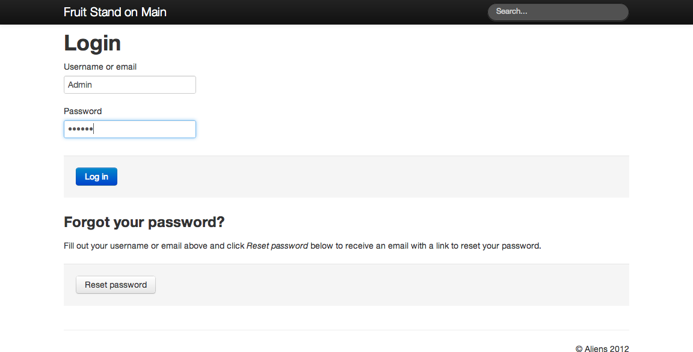

Users and Roles¶
A website is usually a simple presentation of text and images and other content available for view by anyone. The content of the website is added by any number of ways to build websites, but there is often no concept of “logging in” to see content. The content is viewable by all who visit the website. This can be called anonymous viewing, and the general website visitor can be called an anonymous user.
A CMS does involve the concept of “logging in,” at least for the person adding content, and it involves the concept of having content in public vs. private state: public, for allowing open viewing by the anonymous user, as for a typical website, and private, for restricting viewing to the “logged in” user. Once a user has logged in, they can be called an authorized or an authenticated user, because they have given their correct username and password.
In its simplest form, Kotti allows a special user, called the Admin user, to log in and add and edit content. If the Kotti website is so simple that only one person will be adding content, that user will be the Admin user. The Admin user has full rights to do anything to the website. For our fruit stand website, we will only need the Admin user account.
Let’s log in by clicking the Log In button on the default Kotti website’s front page. That takes us to a page with the web address “/login” (which would be on the end of the base web address, e.g., “http://www.example.com/login”).
Note
You need to be logged in to see Add, Edit, and other forms, and you need rights as either the Admin user or a user with a role given Edit rights. After logging in, you will see a menu bar at the bottom of the site header, with menu choices for Private vs. Public (state), View, Contents, Edit, Share, Actions, Add, Navigate. Your username is at the far right, where there is a pull-down menu for setting your personal site preferences.

For a larger Kotti website, where several people add content, the Admin user may create accounts for other people. One common approach is to divide the website into several top-level sections that different people manage. For example, imagine a scenario where Joe, Sally, and Xavier are the content managers for such a website, we’ll say for a musical act agency. First the Admin user logs in, creates the three accounts, then sends emails with user names and passwords. The Admin user creates three top-level sections of the website, notifying Joe, Sally, and Xavier about their responsibilities: Joe for the Prospects section, Sally for the Existing Clients section, and Xavier for the Legal Affairs section. The Admin user assigns rights to these three areas by creating three user groups, prospects, existing_clients, and legal_affairs, then by setting the respective groups as owners of the three website sections. This way, additional people can be added by simply assigning them to a given group. For example, if Judy works with Xavier on the legal team, the Admin user creates a new account for Judy, then assigns her to the legal_affairs group, then emails her about the new account and her responsibilities. Judy and Xavier will both have rights to add and edit content in the Legal Affairs section.
Kotti includes a user registration system that can be open for general users to sign up. This is useful for social media websites that seek out membership. It can also be useful for a larger organization or company, to ease the account creation process. The system can be configured so that new registrants automatically receive a confirmation email. These new users can also automatically be assigned to a group.
Many different scenarios are possible for creating roles for users of the CMS. For a large multi-level organization, user groups can be created that mimic that organization. Rights can be assigned so that users in one group are restricted in what they can view, what they can add and edit. In the classic example, a newspaper could have user groups for reporters, photographers, editors, managers, etc. Each would have specific responsibilities and rights. A reporter can only write and compile articles, together with photographers. An editor can edit their work, but is not allowed to publish. Only managers can publish content.
Even a small business with a handful of employees, or a small non-profit with just a few members, can benefit from some form of structure like this. Kotti can handle needs of small and large organizations and companies.
The term used for the setup for scenarios described above is workflow. A workflow is a set of policies created for a given CMS setup, wherein user groups and roles are defined, and relationships and responsibilities are set. Additional states, augmenting the default Public and Private, such as Pending, Postponed, Scheduled, Ready-For-Circulation, Needs-Full-Review, etc., may be added, depending on specific needs. As the state names suggest, this is an area where creativity can help to build a fine-grained system.
You do not need to create a saved workflow policy to use a Kotti website. As user groups are created manually by the Admin user, a defacto workflow is created. A saved workflow is only created when there is a need to reuse a given set of policies. Creating and saving workflows is covered in an advanced part of this documentation.